若松観音/山形県天童市
めでためでた〜の若松さまよ〜 と、花笠音頭の一節で有名な若松観音である。ここは最上三十三観音の一番札所でもある。 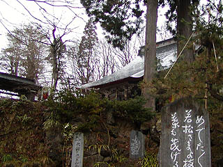 山深い境内には観音堂、元三大師堂、本坊などの建物があり、古刹の名に相応しい立派な寺院だ。 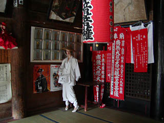 観音堂には雨の日だというのにひっきりなしに参拝者が訪れている。 一番札所らしく巡礼者の服装チェック用のマネキンなどが置かれていて一寸無気味でした。 かつてはこの観音堂にムカサリ絵馬が奉納されていたが観音堂が国の重文に指定されてからは古いモノは絵馬堂、最近のモノは本坊の方に移されたということなので、まずは絵馬堂に行ってみる。 絵馬堂は昭和63年に建てられたもので、その上に古い木造の元三大師堂が乗っている状態になっている。 絵馬堂には比較的古い時代の絵馬が数多く掛けられており、絵馬堂というよりは一大ムカサリ絵馬博物館といった雰囲気だ。 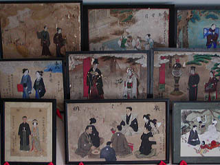 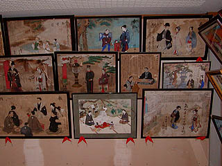 見れば大正、戦前あたりのものが多い。一番古いものは失念したが明治の頃のものもあった。 説明によればこのムカサリ絵馬という習俗は江戸時代からあったという事なので、もしかしたら江戸時代のものもあったかも知れない。 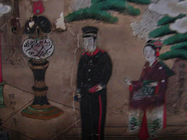 中でも戦時中のものが目につく。これは昭和18年に奉納されたもの。やはり戦死した軍人さんなのだろうか。 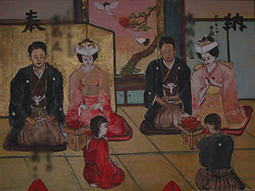 こちらは兄弟で合同のムカサリだ。お二方ともそろってニューギニアで戦死されている。20歳と24歳。 自分がその頃何をして何を考えていたかを思い出し、愕然とする。 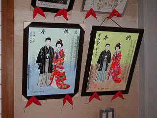 これが現代のスタンダードな形式のムカサリ絵馬。一番の特徴は背景を一切排した記念写真のような絵面になっている事。 この絵は近在のムカサリ絵馬専門の絵師の方によるものだ。 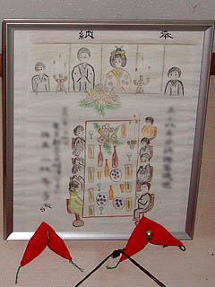 こちらは大胆なアングルの絵馬。紙に色鉛筆で描かれたものだ。婚礼というか披露宴の様子なのだろう。テーブルに並んだ料理の描写が泣かせる。 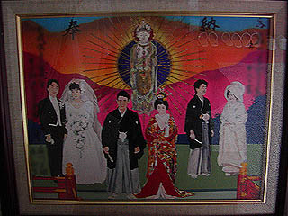 こちらは三組合同ムカサリ。それぞれの衣装に工夫が凝らされている。観音様や背景の色使い、また新郎新婦の表情が明るく、目出たい雰囲気のムカサリ絵馬だ。 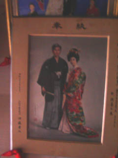 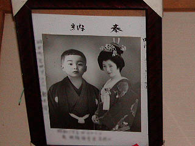 これがニューエストスタイルのムカサリ絵馬。合成写真である。 この辺になると背景などは最初から無い事になっている。 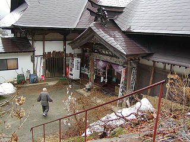 こちらは本坊、納経所と庫裡を兼ねたような建物。中に入ると欄間に何段にもわたってみっしりムカサリ絵馬が掛けられている。 撮影は御遠慮くださいとの事だったので写真はないがここでも様々な絵馬を見ることができた。 ほとんど平成に入ってからのもので今年に入ってからのモノもいくつか見受けられる。多くは先程御覧いただいたムカサリ絵師によるものだったが、もちろん奉納者が手書きのものや合成写真のものなどもたくさんあった。 元々山形県内の方の奉納がほとんどだったが、何度かテレビ等で紹介されたそうで今ではかなり遠方からの奉納者も多いとか。絵馬を見ると広島や北海道などの住所も見られる。 また、この絵馬奉納は元々オナカマとよばれるこの地方にいる巫女が奉納を推賞したり結婚相手の名前などを決めていたらしいが現在ではオナカマに頼ることなく奉納者が気の向いたときに奉納するそうだ。奉納の時期も故人が結婚適齢期になったから、というだけでなく、例えば奉納者の息子が結婚するのだが幼いころに亡くなった奉納者の兄弟もあの世で可哀想だから、というような理由で絵馬を奉納するケースも多い。従って奉納日は平成だが故人の死亡年月日は大正、などという絵馬もある。 また、一家で不幸が続くと先般のオナカマにお伺いをたてて「何代前の某があの世で一人身で寂しがっておるぞよ」みたいな御宣託を受て奉納する場合もあるという。先程絵馬堂で見た三人（三組？）合同の婚礼などはそういったケースなのかもしれない。 このムカサリ絵馬というのは亡くなった故人を悼む気持ちから自然に発した部分と同時に今生きている人達の現世利益の為に行う行為でもあるという側面があるということは重要なポイントだと思う。 お寺の大黒さんに話を伺うと、本当は奉納者が自分で描いた絵馬を奉納して欲しいのだが絵心のない方は絵師に描いてもらっている、との事。 最近は絵師の方が描いたモノが多いので昔のような力作が少なくて寂しいとも仰っていたのが印象的だった。 塗り絵形式のものもあった。奉納者自身に少しでも手を加えてほしいというお寺の姿勢が伺える。
１ 山寺/山形県山形市2 唐松観音、六椹観音/山形県山形市 3 若松観音/山形県天童市 4 黒鳥観音/山形県東根市
ムカサリ絵馬へ戻る
珍寺大道場 HOME